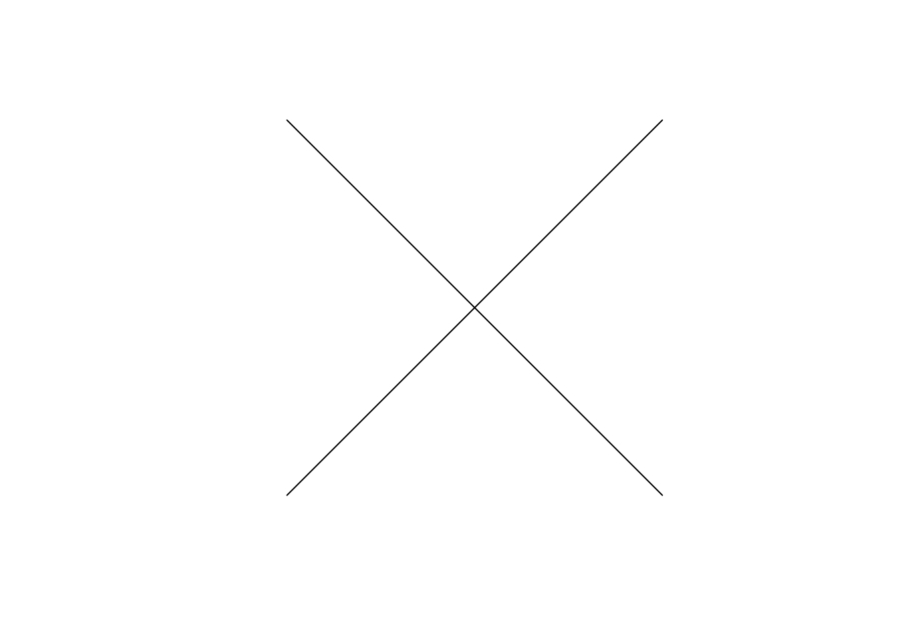
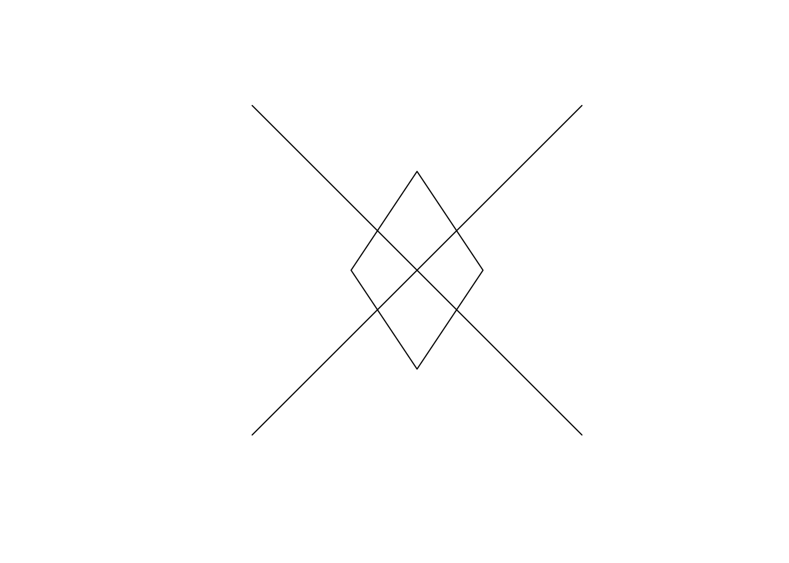
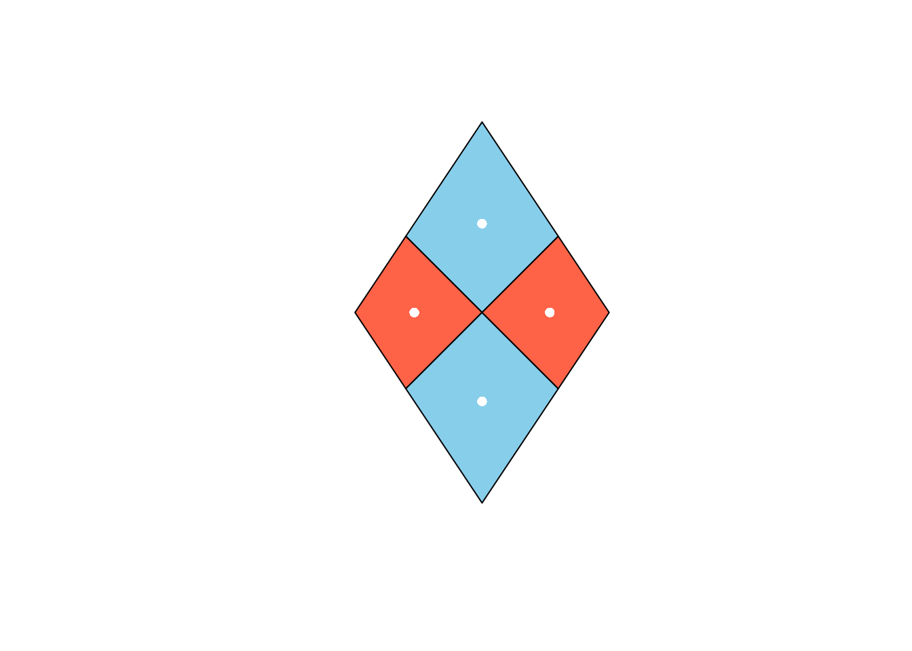
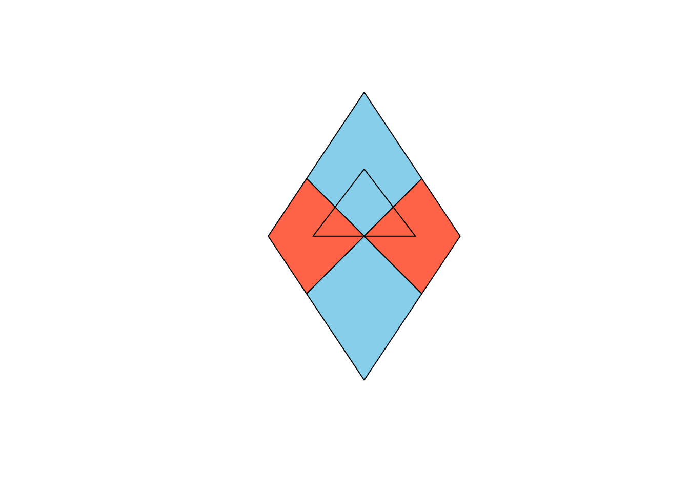
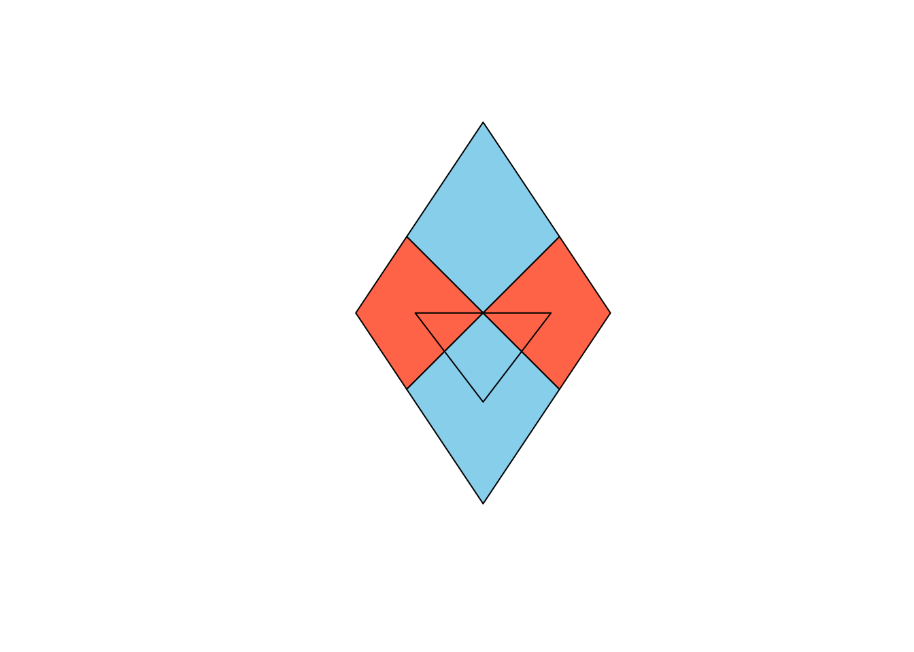

Spatial II
The following exercises serve as an introduction to the functionality of the sf package. Anytime you use a new function, use ? to learn how it works. Some of these exercises ask you to plot the result. Plots are provided to check your answer.
- Following the approach used in lecture, use
st_linestringto create two separate line segments calledl1that stretches from \((0, 0)\) to \((1, 1)\) andl2that stretches from \((0, 1)\) to \((1, 0)\). View them using base Rplot()1.
- Form a spatial data frame (an object with classes
sfanddata.frame) calledmy_lineswith two columns:
id: an attribute with values1and2.geom: a simple feature (geometry) column containing the two lines. with the coordinate reference system OGC:CRS84.
Use the coordinate reference system “OGC:CRS84”.
- Create a second spatial data frame, this one with a diamond-shaped polygon. The diamond should have corners at \((.5, .8)\), \((.3, .5)\), \((.5, .2)\), and \((.7, .5)\) and use the same crs. It should have an attribute called
pricewith the value100. Call your spatial data framemy_diamondand plot it atop your lines.

- Calculate the dimension, length, and area of
my_lines().
- Calculate the dimension, length, and area of
my_diamond().
- Use the
st_split()function inside thelwgeompackage to split the diamond into four diamonds using your lines and name the resulting objectsplit_diamond. After inspecting the result, run the following line to extract each of the polygons into a separate feature (row) of a spatial data frame.
split_diamond <- split_diamond |>
st_collection_extract("POLYGON")Plot the resulting sf collection of 4 features, with each of the split diamonds filled with a color2.
- Add two attribute columns to
split_diamonds:
yield: that takes values of 10, 20, 30, and 40 for the top, right, bottom, and left split diamonds, respectively. You can imagine this is the yield of four fields of corn.split_price: the originalpriceof the full diamond scaled by the relative area of each of the four split diamonds. Round the split price to the nearest cent.
Be sure to save the new columns back into split_diamonds.
- Compute the centroids of the four split diamonds, call them
my_cents, and add them to your plot. Set theircolandpchas you like.

- Using what you know about data frame subsetting, remove the bottom-most centroid. Then take the union of the three remaining points, form a convex hull from them, and save the polygon to
my_tri_up3. Plotmy_tri_upon top of your split diamond.

- Repeat the previous exercise, but form an sf object called
my_tri_downthat has the top-most centroid removed.

- Under the definition of “intersects”, which of your split diamonds intersect the
my_tri_up? Check by doing a spatial join.
- Calculate the area of
my_tri_uptwo ways:
- By directly measuring the area of the triangle.
- By interpolating from the
areaattribute of the split diamonds that it intersects with4.
Do they agree?
- Calculate the
yieldof bothmy_tri_upandmy_tri_downby interpolating from theyieldof the split diamonds that they intersect with. Why are they different from one another?
Footnotes
Each object will require a separate call to
plot(). You can addadd = TRUEtoplot()so that the contents of the second get added to the first. Note that these plot additions don’t carry over from code cell to code cell.↩︎You can add colors to
plot()using thecolargument and callcolors()at the console to see the color names available in base R. I usedcol = c("skyblue", "tomato")but you’re welcome to pick your own colors.↩︎The functions for these set operations in
sfare exactly as you’d expect: the name of the operation prepended byst_. Note also that the union operation will drop thesfclass. You’ll need to run your object throughst_sf()to get it back.↩︎When interpolating, you’ll need to decide whether your variable is spatially extensive. An attribute that is spatially extensive has a magnitude that is proportional to the size of the feature it’s measured on; as the area of the feature increases, the magnitude of the attribute increase propotionally.↩︎